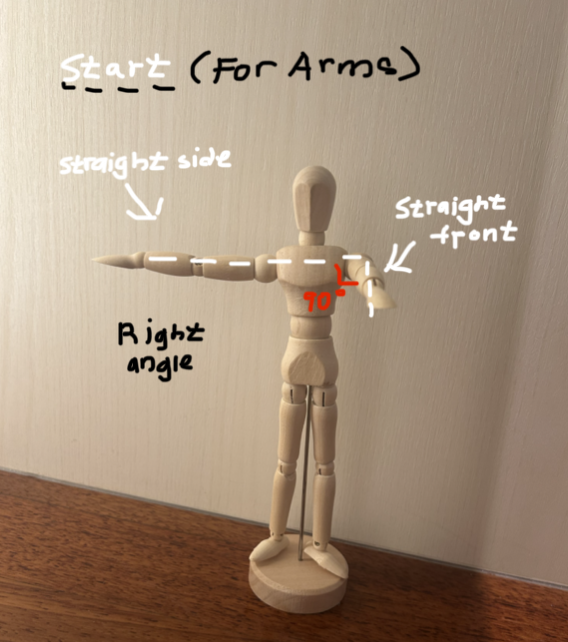
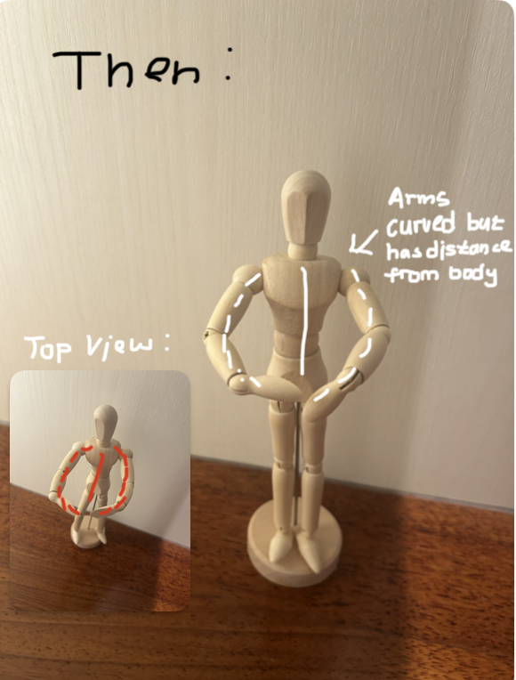
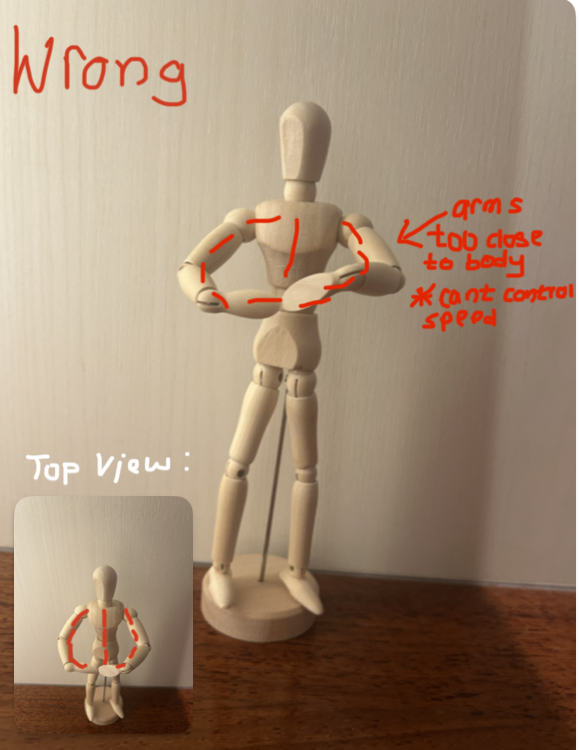

Angular momentum is a crucial part of the mechanics in pirouettes. It is often defined
as the reason for rotational inertia which is how mass is distributed to the axis of
rotation and angular velocity which is how fast the turn is occurring. In dance terms,
it would be the speed and control of your pirouettes
Physics Explanation:
Angular momentum is a measure of how much rotational motion an object has and
is crucial for understanding turns in dance. It is the rotational equivalent of
linear momentum and depends on two factors, the rotational speed (how fast the
object spins) and the distribution of mass around the axis of rotation.
Equation for Angular Momentum = Moment of inertia X Angular Velocity.Connection to Dance:
In dance, especially in pirouettes, dancers have to control their angular momentum
by adjusting and changing their arm and leg positions. Here is how it works:
When a dancer extends their arms outward, the moment of inertia increases due to
the mass being farther from the axis of rotation (the core of the dancer's body).
According to the equation, if the moment of inertia increases, angular velocity
must decrease to keep the angular momentum constant. This slows the dancer’s rotation.
In easier terms, when a dancer stretches their arms out during a spin, their mass
moves farther from their body’s center making it harder for them to turn. To keep
things balanced, their spinning speed has to slow down. This is why, when dancers
extend their arms, their rotation naturally becomes slower. Conversely, if they
pull their arms close to their body, they speed up.When a dancer pulls their arm inwards,
the dancer reduces the moment of inertia, and angular velocity must increase for the angular
momentum to remain the same, making them spin faster. This phenomenon is an application of
the conservation of angular momentum — since no external force is acting on the dancer,
their angular momentum is conserved.
In easier terms, when a dancer pulls their arms close to their body, they make it easier
for their body to spin. To keep the spin balanced, their rotation speed has to increase,
so they spin faster. This happens because of the conservation of angular momentum,
which means that, since no outside forces are acting to slow down or speed up the spin,
their total spin energy stays the same. So, by bringing their arms in, they’re redistributing
that energy to spin quicker without extra effort.
This is what your arms for the turn should look like:



*when smaller you go faster and when bigger you go slower. If one goes down the other
has to go down so if it shrinks it goes faster.
Since angular momentum is conserved (it stays constant as long as no external
forces like friction act on the dancer), changes in body position (mass distribution)
will impact the speed of the pirouette. For example, Tightening the body (pulling arms in)
reduces the moment of inertia, increasing angular velocity (faster spin) and extending
arms or legs increases the moment of inertia, which slows down the turn. This is why
dancers often start a turn with their arms out to stabilize themselves, then bring them
in to increase speed for a faster spin.
Improvement tip: Practice controlling your arm movements. Start with a slow pirouette with arms
extended, then smoothly bring them in. By mastering control over arm adjustments, you can better
regulate speed and stability during turns which will allow you to do more consistent pirouettes.